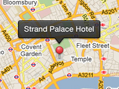

Example of drawing tooltips using uGUI.
Requirement: Unity v4.6+
Usage instructions:
Add this script to map GameObject.
Add prefab of tooltip.
Add this script to map GameObject.
Add prefab of tooltip.
uGUICustomTooltipExample.cs
/* INFINITY CODE 2013-2016 */
/* http://www.infinity-code.com */
#if !UNITY_4_3 && !UNITY_4_5
using UnityEngine;
using UnityEngine.UI;
namespace InfinityCode.OnlineMapsExamples
{
[AddComponentMenu("Infinity Code/Online Maps/Examples (API Usage)/uGUICustomTooltipExample")]
public class uGUICustomTooltipExample : MonoBehaviour
{
public GameObject tooltipPrefab;
public Canvas container;
private OnlineMapsMarker marker;
private GameObject tooltip;
// Use this for initialization
private void Start ()
{
marker = OnlineMaps.instance.AddMarker(Vector2.zero, "Hello World");
marker.OnDrawTooltip = delegate { };
OnlineMaps.instance.OnUpdateLate += OnUpdateLate;
}
private void OnUpdateLate()
{
OnlineMapsMarkerBase tooltipMarker = OnlineMaps.instance.tooltipMarker;
if (tooltipMarker == marker)
{
if (tooltip == null)
{
tooltip = Instantiate(tooltipPrefab);
(tooltip.transform as RectTransform).SetParent(container.transform);
}
Rect rect = marker.screenRect;
Vector2 pos = new Vector2(rect.center.x, rect.yMin + 30);
Vector2 point;
RectTransformUtility.ScreenPointToLocalPointInRectangle(container.transform as RectTransform, pos, null, out point);
(tooltip.transform as RectTransform).localPosition = point;
tooltip.GetComponentInChildren<Text>().text = marker.label;
}
else if (tooltip != null)
{
DestroyImmediate(tooltip);
tooltip = null;
}
}
}
}
#endif